-
Contemplating on Disorders
collected conceptual photography
Darkness is a constant part of human existence. This collection of experimental stand-alone visuals explores every-day distortions and visible elements of mental illness, based on personal experiences and general psychological studies.
2013 - ongoing
meta morphing
- 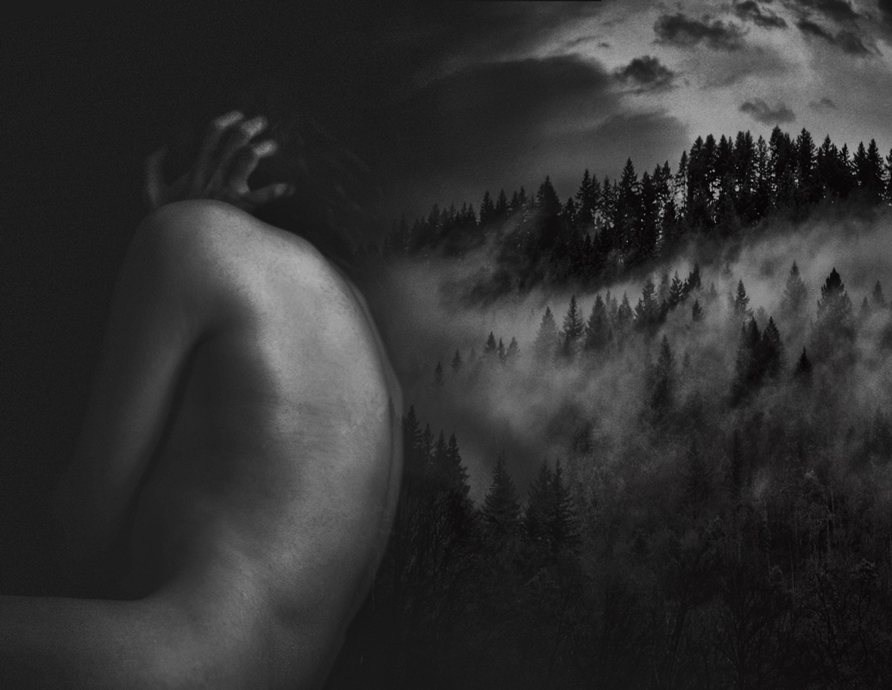
the silence
- 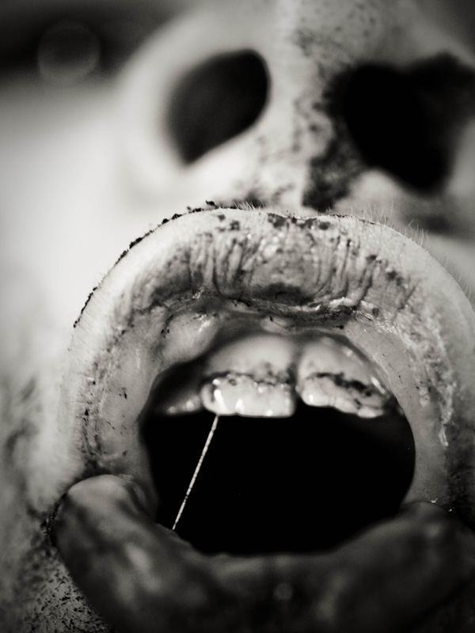
a dark cave
- 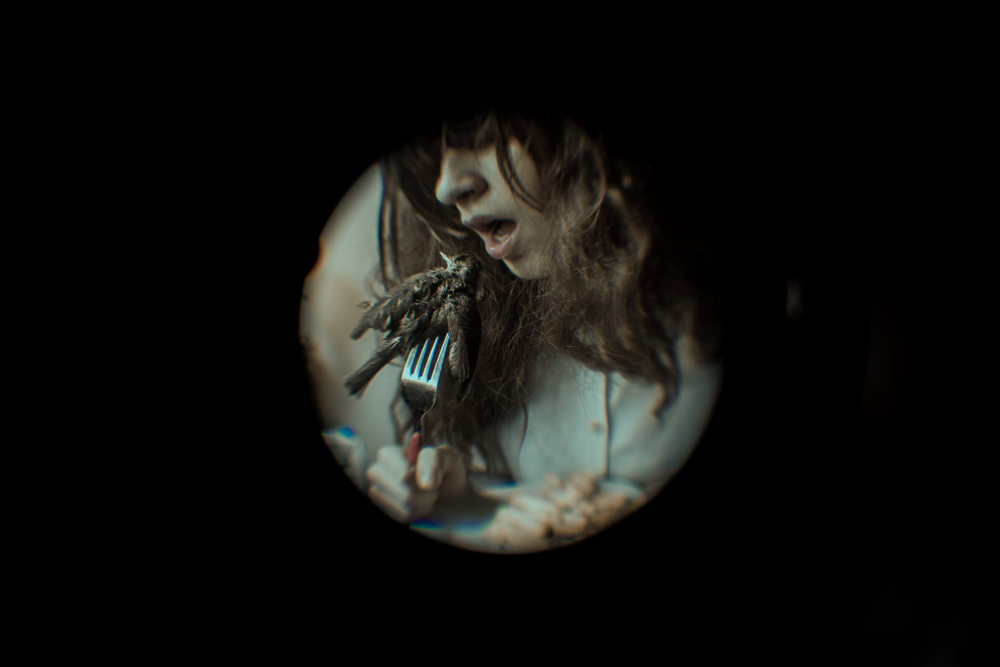
afternoon snack
- 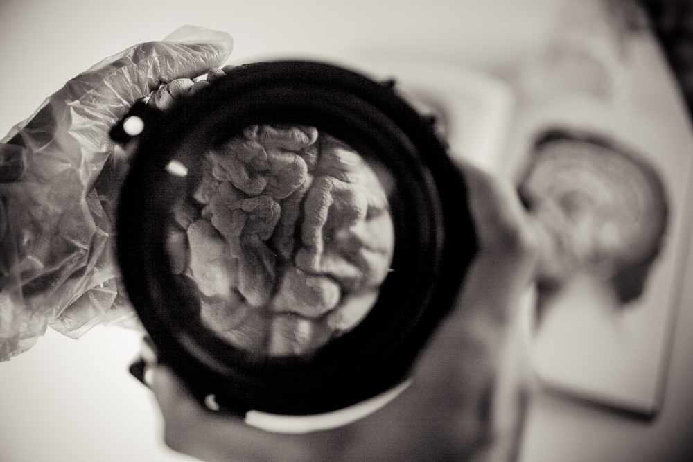
curiousity

the day we couldn't keep it together
- 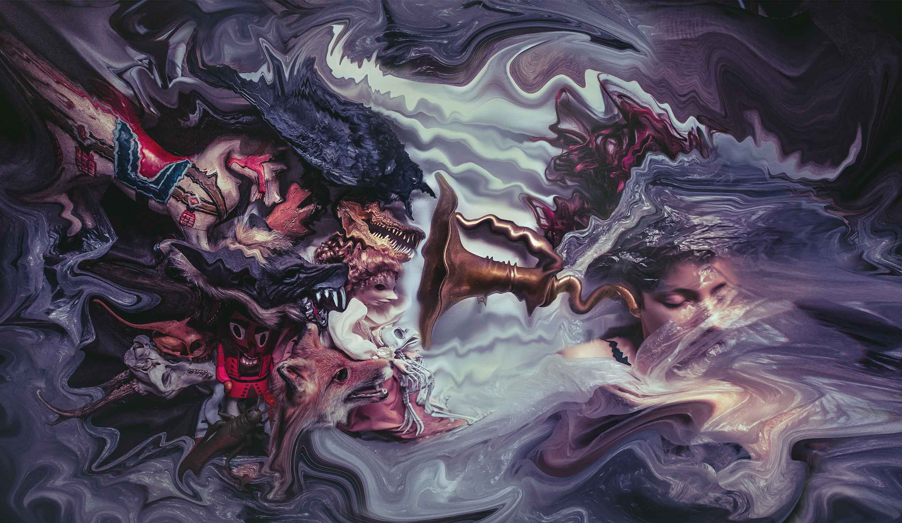
post traumatic stress disorder
- 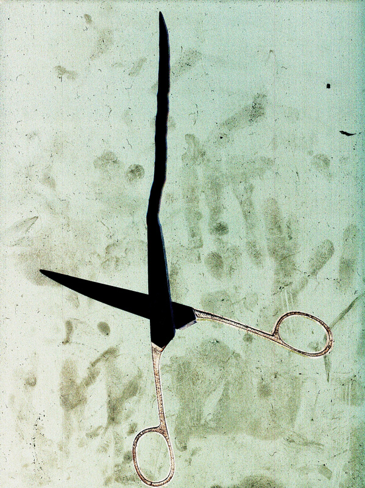
paranoia
- 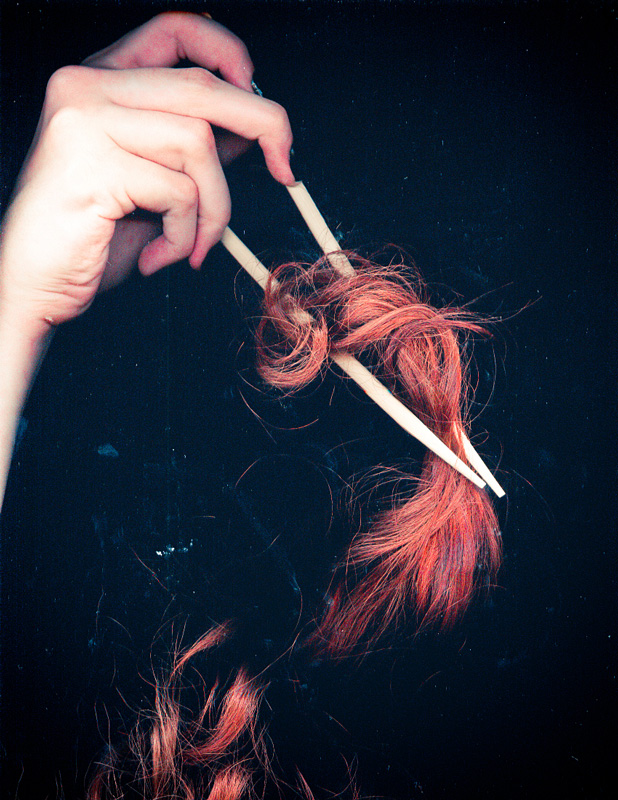
her breakfast
- 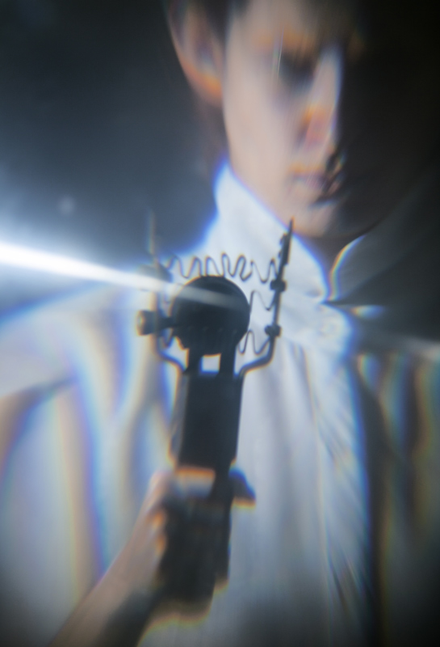
hello, doctor
- 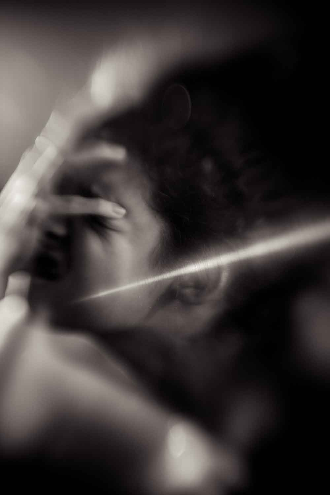
those aches
- 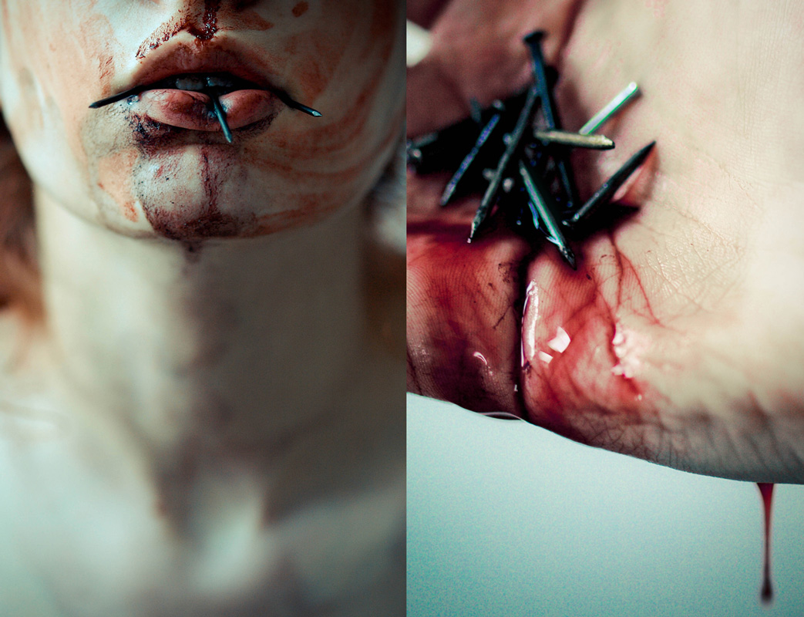
the invention of lies
- 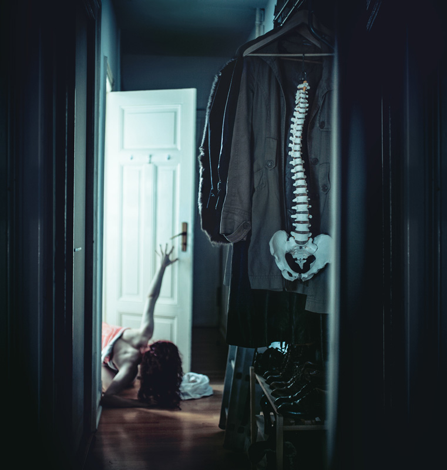
every-day issues
- 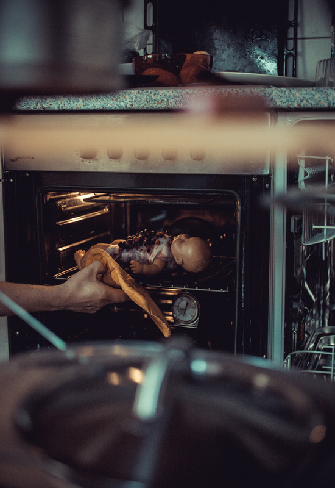
cook book fantasy
- 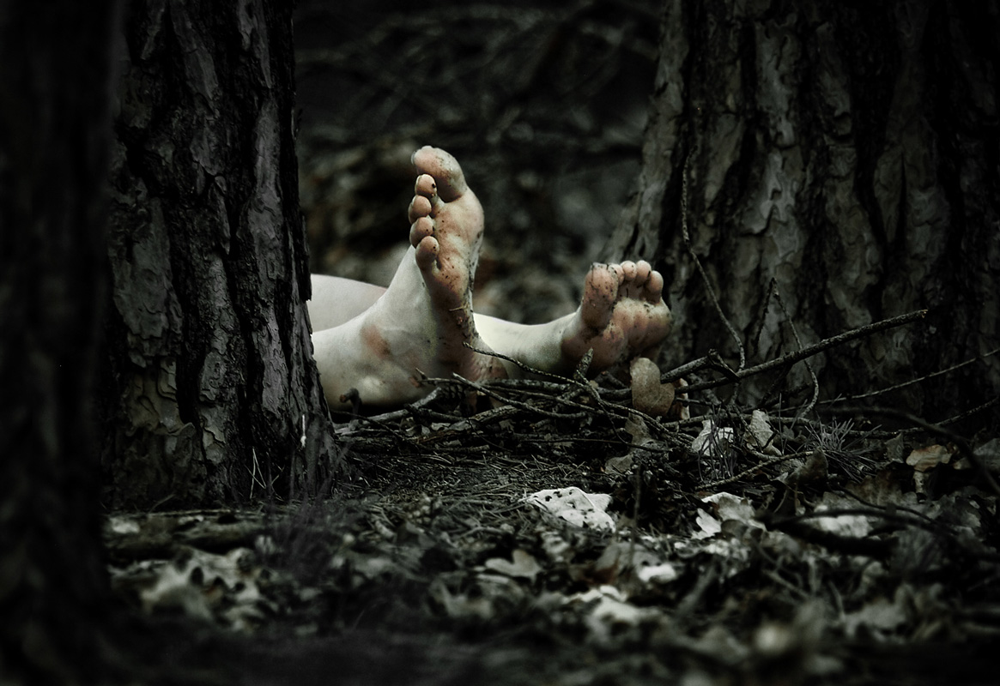
a picnic